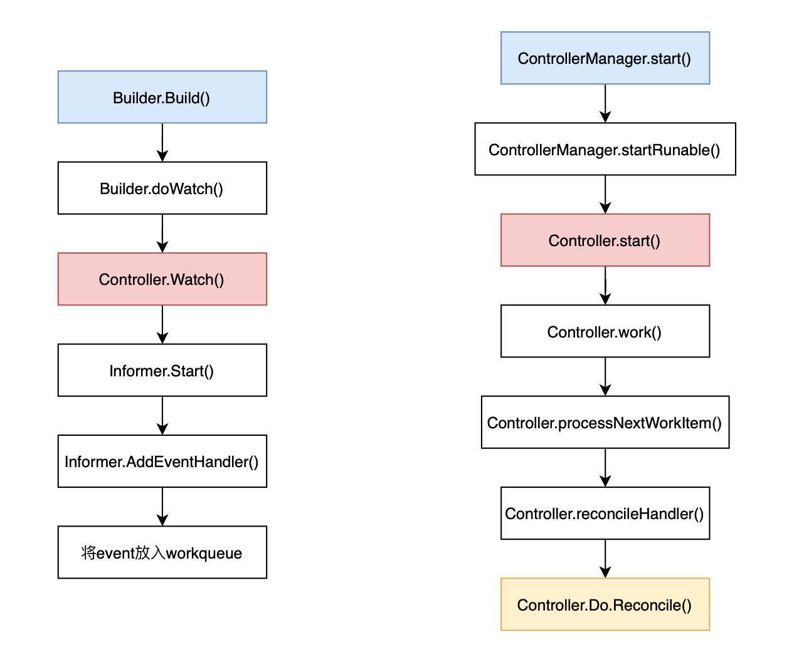

controller-runtime是kubernetes相关的一个开源项目，用于构建k8s控制器。通常可与kubebuilder一起使用构建CRD以对应的自定义控制器。项目地址：
https://github.com/kubernetes-sigs/controller-runtime
使用方法
以下伪代码，忽略了细节
- 构建一个reconciler
1 | type reconcilerTest struct { |
- 重写Reconcile方法
1 | func (r *reconcilerTest) Reconcile(req controllers.Request) (controllers.Result, error) { |
- 创建manager
1 | mgr := controllers.NewManager(…) |
- 创建reconciler
1 | reconciler := reconcilerTest{Client: mgr.GetClient()}} |
- 创建一个builder，并通过For/Watches方法进行配置，最后利用builder创建controller
1 | builder := NewControllerManagedBy(mgr) |
- 启动manager
1 | mgr.Start(controllers.SetupSignalHandler()) |
数据对象概览
controller-runtime包含以下比较重要的数据结构，manager、controller、builder
manager是一个interface，controller manager是它的implement struct
controller manager包含多个runnable，runnable是个interface，controller实现了该interface。所以controller manager与controller是一对多的关系。
builder构建controller，把controller manager和controller联系起来
controller包含两个方法
- Watch：利用Informer得到event（通过回调函数，具体细节可以查阅我的另一篇博文理解K8S Informer机制），将其放入workqueue
- Start：从workqueue拿出event，将其转化为request，作为参数传入Reconcile()方法，用户重写函数内容实现自定义控制器逻辑。
代码逻辑梳理
在这里以controller两个核心func——Watch\Start为中心，梳理出两条线表示 controller-runtime 的调用链。

其中，蓝色框为用户初始化的代码，如使用方法一节中所示。黄色框为用户需要重写的方法。
K8S 原生的 kube-controller-manager 实现的控制器逻辑也是类似的，也使用了infromer与workerqueue。具体实现还未详细阅读，希望未来做总结分享。